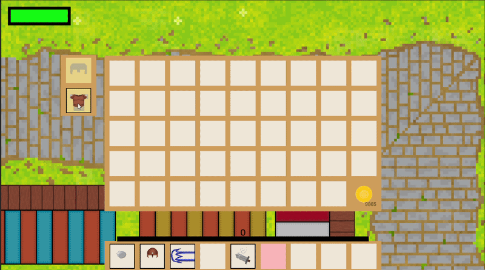

Arcana Rift
Inventory system
Built to stay out of the way — you should be able to reorganise it without thinking about it.

How it works
- Open and close — press
Iat any point during the game. - Adding items — loot and rewards drop into the next free slot automatically.
- Moving items — drag and drop between slots to organise however you like.
- Stacking — identical items such as potions stack together to save space.
- Using items — right-click or select an item to use or equip it, depending on its type.
- Hotbar — drag an item to the hotbar for instant access; the slots are mapped to the number keys.
- Tooltips — hover any item to see its name, description and effects.
- Discarding — drag an item out of the window onto the trash icon.
Under the hood
The whole system is built in Unity with C#, and deliberately structured so that new item types can be added later without touching the drag-and-drop logic.